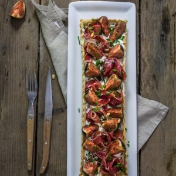
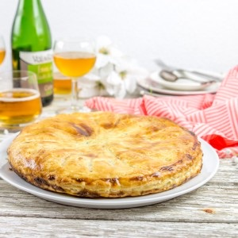
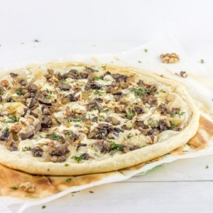
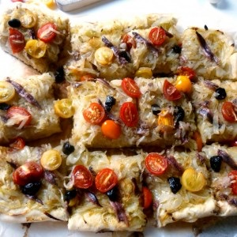
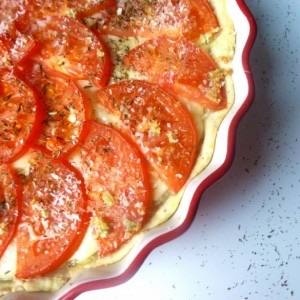

Tartes salées (15 recettes)
 7 avis
7 avis
Recettes VégétariennesSaléTartes salées
Tarte tatin au potiron, pomme, chèvre et romarin
 9 avis
9 avis
ApéritifSaléTartes salées
Cake tomates séchées comté pistaches
 18 avis
18 avis
ApéritifSaléTartes salées
Cake chèvre épinards et amandes
18 avis
SaléTartes salées
Tarte tomates ricotta

17 avisSaléTartes salées
Tarte chèvre miel et figues
 14 avis
14 avis
ApéritifSaléTartes salées
Tarte soleil saumon aneth

31 avisSaléTartes salées
Tourte au saumon
 29 avis
29 avis
SaléTartes salées
Tarte courgette ricotta
29 avis
Repas LightSaléTartes salées
Tarte allégée asperge thon et fromage Merzer

40 avisSaléTartes salées
Tarte fine aux champignons, gorgonzola, noix
 45 avis
45 avis
SaléTartes salées
Tarte aux brocolis
28 avis
SaléTartes salées
Tarte aux poivrons presque toute rouge

10 avisSaléTartes salées
Pissaladière pleine de couleurs
23 avis
SaléTartes salées
Pâte sablée pour tartes salées

16 avisSaléTartes salées